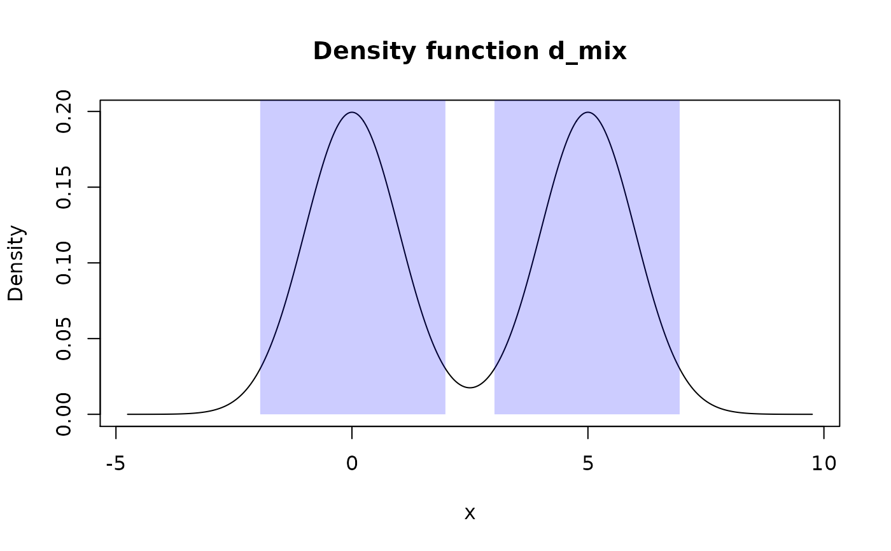

These functions provide ways of working with a region: a data frame with
numeric "left" and "right" columns, each row of which represents a unique
finite interval (open, either type of half-open, or closed). Values of "left"
and "right" columns should create an "ordered" set of intervals:
left[1] <= right[1] <= left[2] <= right[2] <= ... (intervals with zero
width are accepted). Originally, region_*() functions were designed to work
with output of summ_hdr() and summ_interval(), but can be used for any
data frame which satisfies the definition of a region.
region_is_in(region, x, left_closed = TRUE, right_closed = TRUE)
region_prob(region, f, left_closed = TRUE, right_closed = TRUE)
region_height(region, f, left_closed = TRUE, right_closed = TRUE)
region_width(region)
region_draw(region, col = "blue", alpha = 0.2)| region | A data frame representing region. |
|---|---|
| x | Numeric vector to be tested for being inside region. |
| left_closed | A single logical value representing whether to treat left ends of intervals as their parts. |
| right_closed | A single logical value representing whether to treat right ends of intervals as their parts. |
| f | A pdqr-function. |
| col | Single color of rectangles to be used. Should be appropriate for
|
| alpha | Single number representing factor modifying the opacity alpha; typically in [0; 1]. |
region_is_in() returns a logical vector (with length equal to
length of x) representing whether certain element of x is inside a
region.
region_prob() returns a single number between 0 and 1 representing total
probability of region.
region_height() returns a single number representing a height of a region
with respect to f, i.e. minimum value that corresponding d-function can
return based on relevant points inside a region.
region_width() returns a single number representing total width of a
region.
region_draw() draws colored rectangles filling region intervals.
region_is_in() tests each value of x for being inside interval.
In other words, if there is a row for which element of x is between "left"
and "right" value (respecting left_closed and right_closed options),
output for that element will be TRUE. Note that for zero-width
intervals one of left_closed or right_closed being TRUE is enough to
accept that point as "in region".
region_prob() computes total probability of region according to
pdqr-function f. If f has "discrete" type, output is
computed as sum of probabilities for all "x" values from "x_tbl" metadata which lie inside a region (respecting left_closed
and right_closed options while using region_is_in()). If f has
"continuous" type, output is computed as integral of density over a region
(*_closed options having any effect).
region_height() computes "height" of a region (with respect to f):
minimum value of corresponding to f d-function can return based on relevant
points inside a region. If f has "discrete" type, those relevant points are
computed as "x" values from "x_tbl" metadata which lie inside a region (if
there are no such points, output is 0). If f has "continuous" type, the
whole intervals are used as relevant points. The notion of "height" comes
from summ_hdr() function: if region is summ_hdr(f, level) for some
level, then region_height(region, f) is what is called in summ_hdr()'s
docs as "target height" of HDR. That is, a maximum value of d-function for
which a set consisting from points at which d-function has values not less
than target height and total probability of the set being not less than
level.
region_width() computes total width of a region, i.e. sum of differences
between "right" and "left" columns.
region_draw() draws (on current plot) intervals stored in region as
colored rectangles vertically starting from zero and ending in the top of the
plot (technically, at "y" value of 2e8).
summ_hdr() for computing of Highest Density Region.
summ_interval() for computing of single interval summary of distribution.
# Type "discrete"
d_binom <- as_d(dbinom, size = 10, prob = 0.7)
hdr_dis <- summ_hdr(d_binom, level = 0.6)
region_is_in(hdr_dis, 0:10)#> [1] FALSE FALSE FALSE FALSE FALSE FALSE TRUE TRUE TRUE FALSE FALSE # This should be not less than 0.6
region_prob(hdr_dis, d_binom)#> [1] 0.7004233region_height(hdr_dis, d_binom)#> [1] 0.2001209region_width(hdr_dis)#> [1] 2
# Type "continuous"
d_norm <- as_d(dnorm)
hdr_con <- summ_hdr(d_norm, level = 0.95)
region_is_in(hdr_con, c(-Inf, -2, 0, 2, Inf))#> [1] FALSE FALSE TRUE FALSE FALSE # This should be approximately equal to 0.95
region_prob(hdr_con, d_norm)#> [1] 0.9500426 # This should be equal to `d_norm(hdr_con[["left"]][1])`
region_height(hdr_con, d_norm)#> [1] 0.05840531region_width(hdr_con)#> [1] 3.920624
# Usage of `*_closed` options
region <- data.frame(left = 1, right = 3)
# Closed intervals
region_is_in(region, 1:3)#> [1] TRUE TRUE TRUE # Open from left, closed from right
region_is_in(region, 1:3, left_closed = FALSE)#> [1] FALSE TRUE TRUE # Closed from left, open from right
region_is_in(region, 1:3, right_closed = FALSE)#> [1] TRUE TRUE FALSE # Open intervals
region_is_in(region, 1:3, left_closed = FALSE, right_closed = FALSE)#> [1] FALSE TRUE FALSE
# Handling of intervals with zero width
region <- data.frame(left = 1, right = 1)
# If at least one of `*_closed` options is `TRUE`, 1 will be considered as
# "in a region"
region_is_in(region, 1)#> [1] TRUEregion_is_in(region, 1, left_closed = FALSE)#> [1] TRUEregion_is_in(region, 1, right_closed = FALSE)#> [1] TRUE # Only this will return `FALSE`
region_is_in(region, 1, left_closed = FALSE, right_closed = FALSE)#> [1] FALSE